Three switches that matter.
Respect masks aligns to the visible, masked region. Respect rotation, on by default, uses the true rendered bounds of rotated and 3D layers. Auto refresh keeps the readouts live.
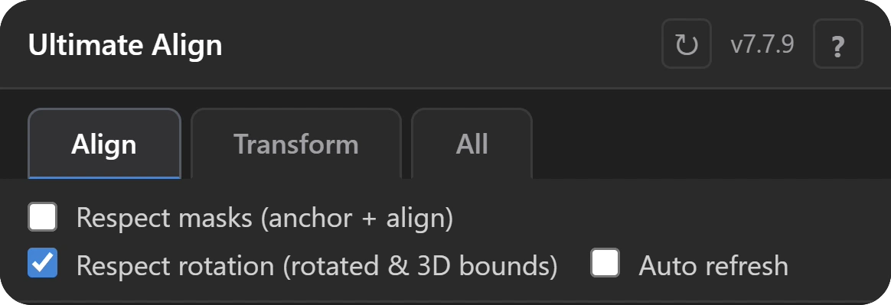
Ultimate Align for After Effects
Three clicks. Not three minutes.
One-time purchase · Free updates · 30-day money-back guarantee · Windows and macOS
Watch it happen
Align, distribute, space. The panel below is the real one, and every button it presses is a real button. Nothing here is a mock-up.
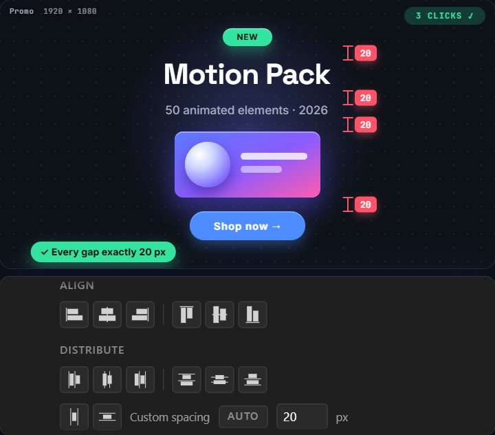
The panel
It docks next to your timeline like any native panel. Align, Transform, or both at once.
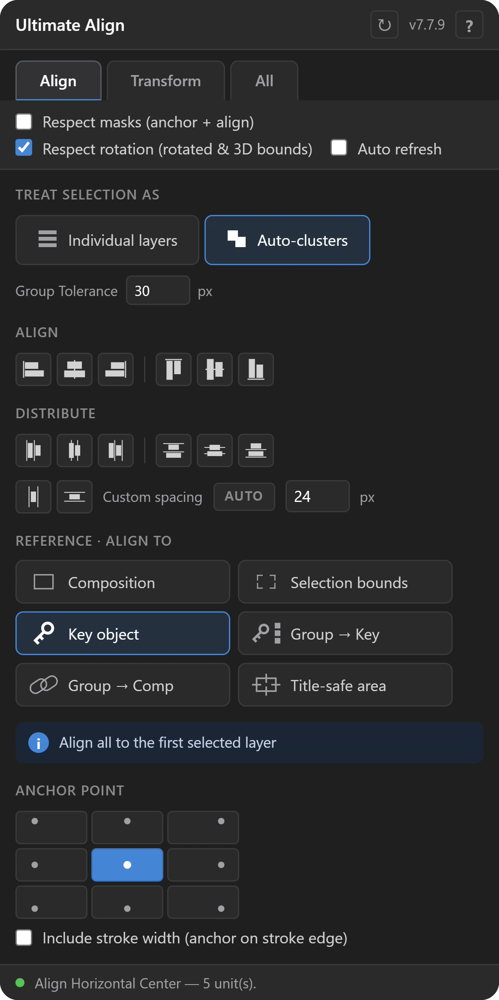
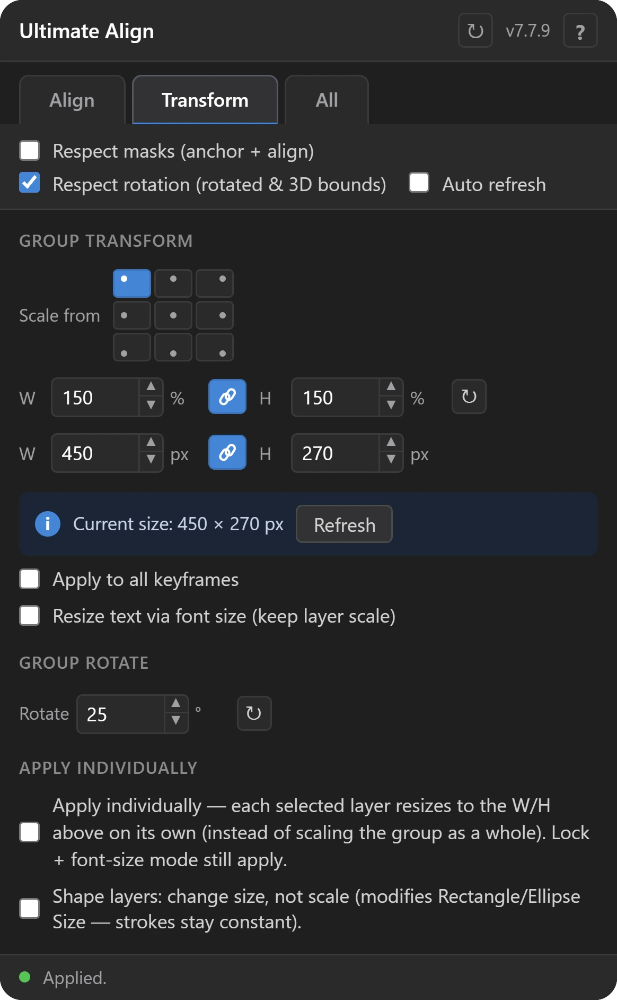
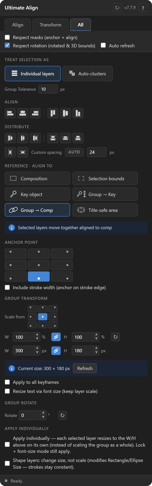
The old way
After Effects’ own Align panel lines layers up with the comp or with each other. Everything else is you, the mouse and the arrow keys: an exact gap, an icon that has to stay glued to its label, twenty logos at the same width, a lockup that has to move as one piece.
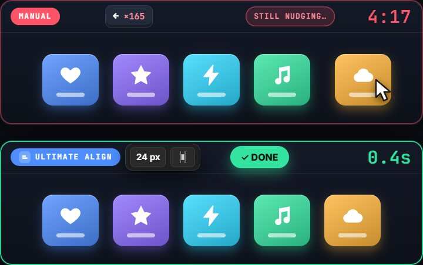
Illustration. The manual side is a time-lapse (×60). The task is identical on both sides: five blocks, exactly 24 px apart.
Three icon + label pairs, evenly spaced. Distribute scatters the icons and labels independently.
All exactly 64 px wide, typed in layer by layer.
A logo with its anchor in the corner that scales the wrong way.
A title that has to sit inside it, where a guess is all you have.
One purchase, no subscription. Free updates, and a 30-day money-back guarantee.
How it works
One idea does most of the work. The six align buttons have no fixed target: they align to whatever reference you pick, so the same buttons do six different jobs.
Any layers, any number. The first one you select becomes the key object.
The comp, the selection, a key object, a whole group or the title-safe area. Six references, and the same buttons do six different jobs.
Align, distribute, or space by an exact pixel gap. Each action is one named undo step.
Up close
Respect masks aligns to the visible, masked region. Respect rotation, on by default, uses the true rendered bounds of rotated and 3D layers. Auto refresh keeps the readouts live.

Individual layers treats every layer on its own. Auto-clusters merge nearby layers into one unit, so an icon and its label move and space together. The tolerance sets how near is near.
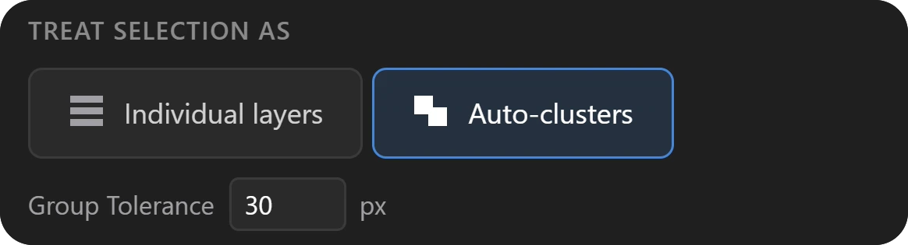
Left, centre, right, top, middle and bottom. Each one aligns to the reference you pick below.
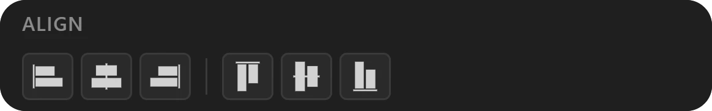
Distribute spreads layers evenly. Custom spacing puts an exact pixel gap between them. AUTO reads the gap you already have and writes the number back.
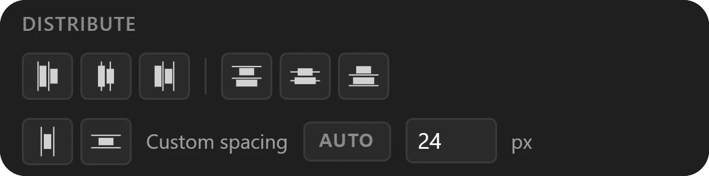
The comp, the selection bounds, a key object, a group to a key, a group to the comp, or the title-safe area. The first layer you select is the key.
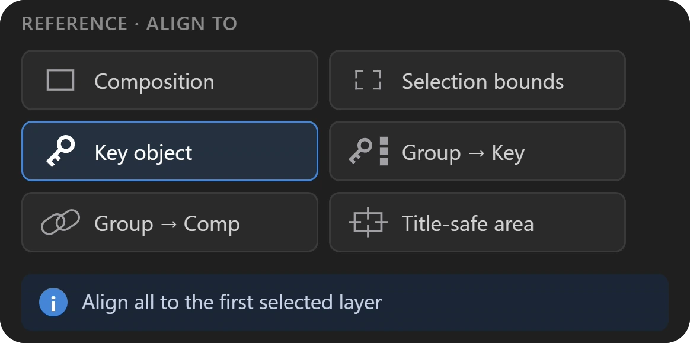
Nine spots on the layer. The position is compensated on every keyframe, so the layer stays exactly where it was.
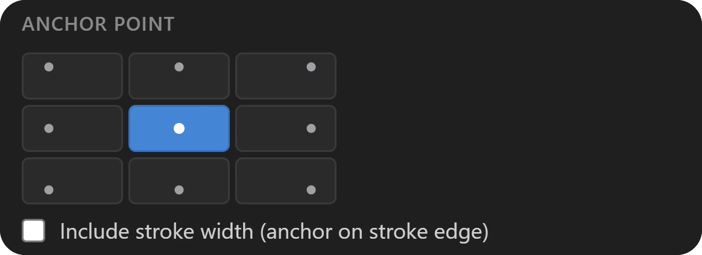
Pick a pivot, type a percentage or pixels, and the whole selection scales as one piece. The percent and pixel rows mirror each other, and the lock keeps the ratio.
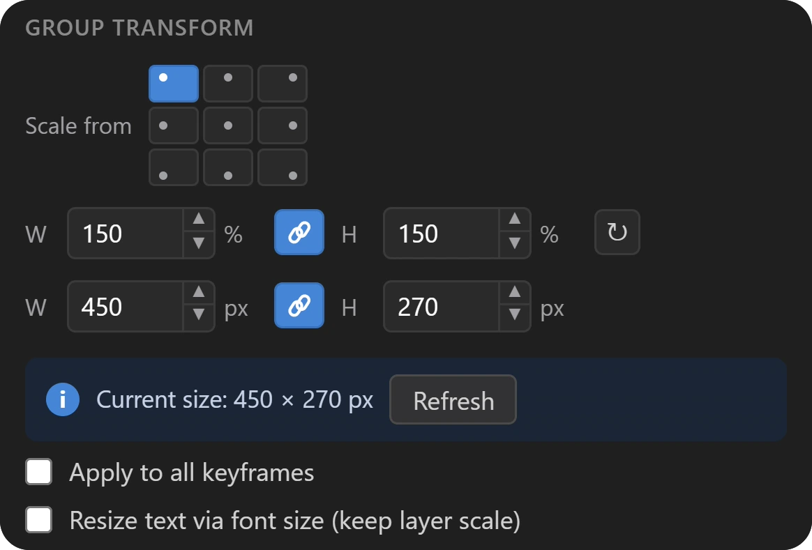
The same pivot drives group rotation. No null object, no parenting.
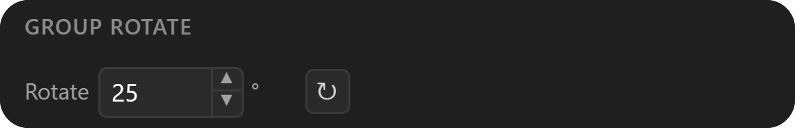
Resize every layer to the same width or height. Shape layers can keep their strokes constant, and text can scale by font size instead of layer scale.
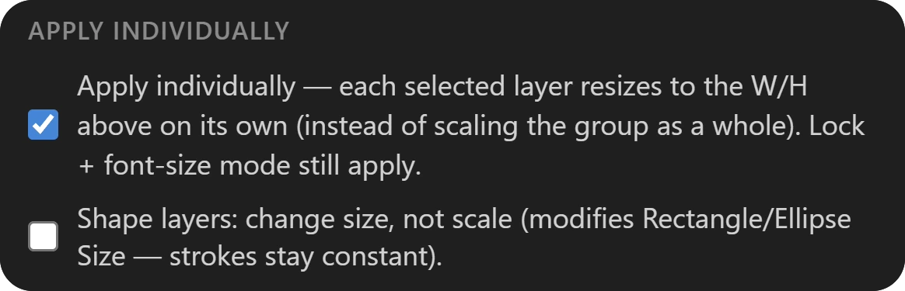
Align
Six references turn the same six buttons into six different tools. Pick what to align to, then click.
Align
Select the hero first, pick Key object, click Align. The key layer never moves.
Without it. Nudge layer after layer until each one matches the hero by eye.
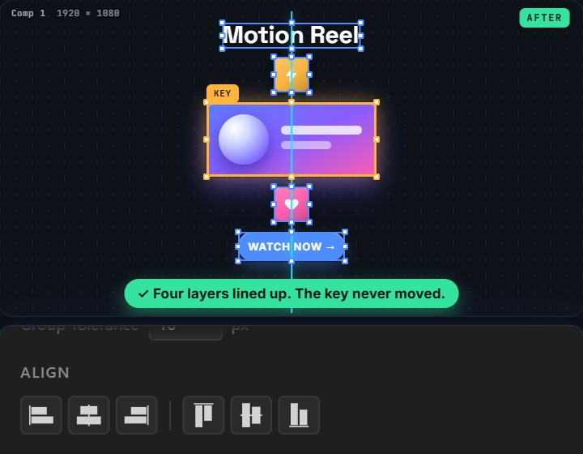
Align
Group → Comp moves the whole selection as one block, an exact 48 px from the edges. Internal layout untouched.
Without it. Drag the lower third into place, then nudge every layer by the same amount.
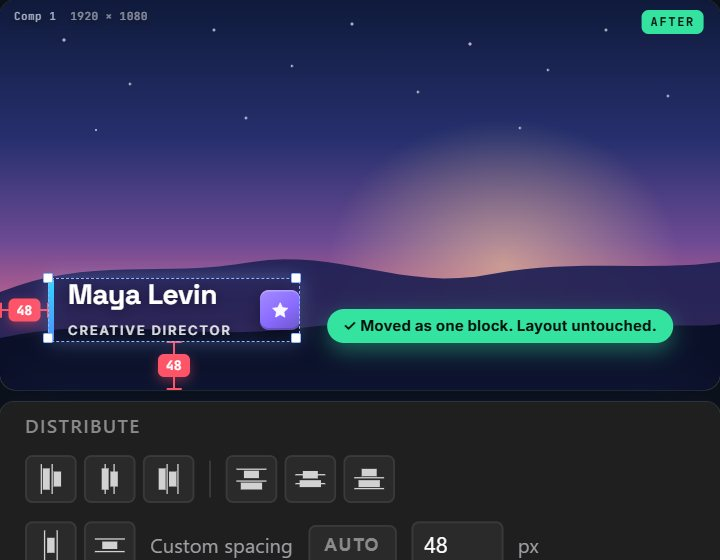
Align
Title-safe is a reference. Type the percentage, click an edge, and each element snaps to the safe box.
Without it. Eyeball it against guides and hope the broadcaster agrees.
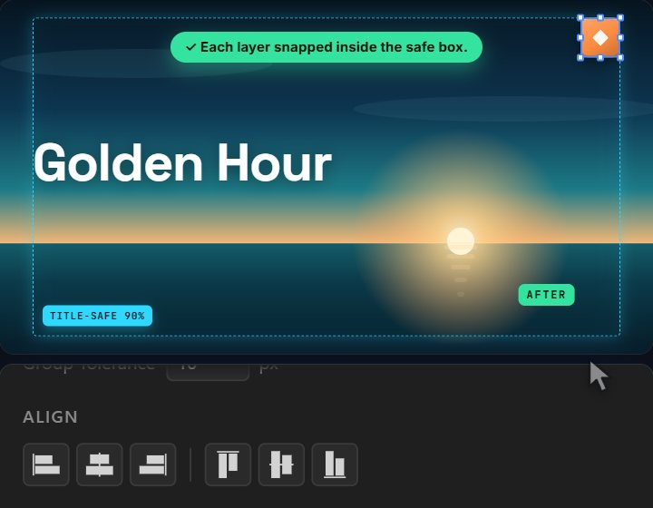
Align
Respect rotation aligns the true rendered bounds, rotation and 3D included.
Without it. A rotated headline gets its unrotated box centred, and lands off-centre.
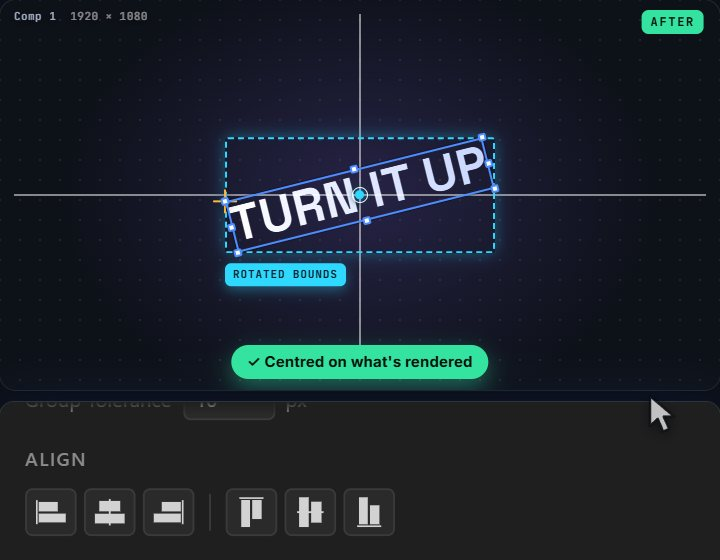
Align
The maths runs in world space. The child moves; its parent and the link stay exactly as they were.
Without it. Parented layers make the maths awkward: the position you see is not the position you set.
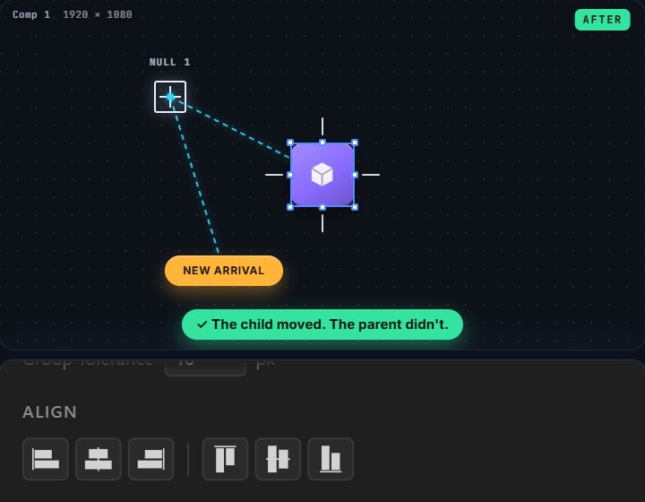
Align
Respect masks aligns to the visible, masked region.
Without it. A masked layer gets its whole source centred, not the part you can see.
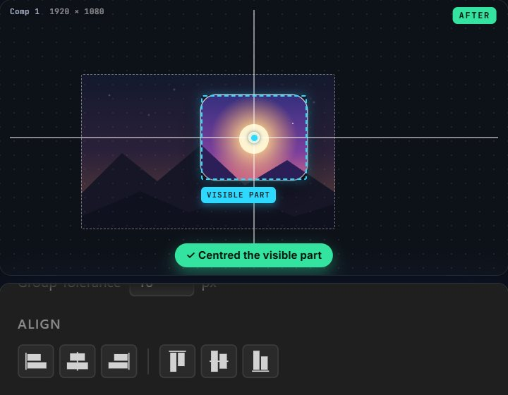
Everything above lives in the same panel, docked next to your timeline.
Space
Type a gap and get precisely that. Or let the panel read the gap you already have.
Space
Auto-clusters treat nearby layers as one unit, so whole cards move and space as blocks.
Without it. Distribute treats every layer separately and scatters icons away from their labels.
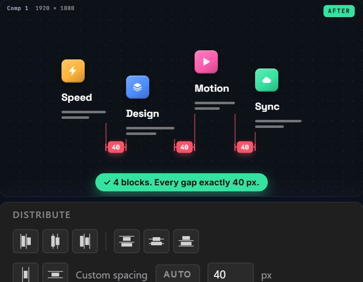
Space
Type 24, click Spacing H. Every gap is exactly 24 px.
Without it. Even-distribute only. An exact gap means manual maths, layer by layer.
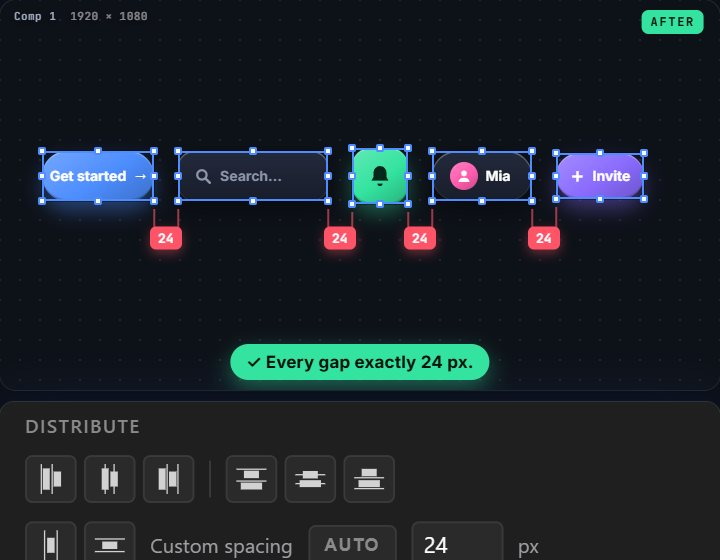
Space
AUTO reads the selection, evens out the gaps and writes the number back for next time.
Without it. Measure the gaps, average them, nudge everything.
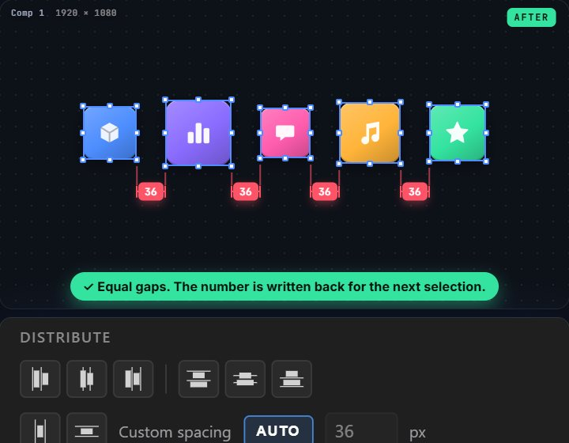
Space
Key object plus a gap: everything else chains outward from the key at exactly that distance.
Without it. Drag, zoom in, nudge, check. Repeat for the other side.
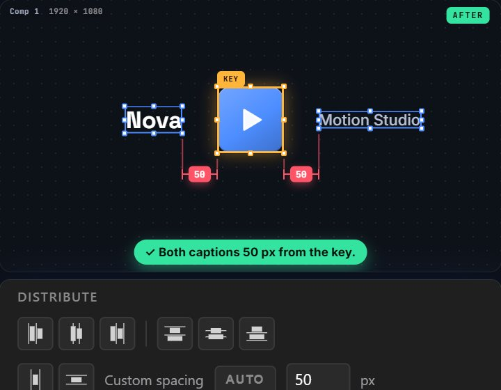
Anchor and transform
Anchors that never jump. Groups that scale and rotate as one piece. Resizes that leave strokes and type alone.
Anchor
Click one of nine spots. Position is compensated, across all keyframes.
Without it. Move the anchor, then counter-shift the position by hand, on every keyframe.
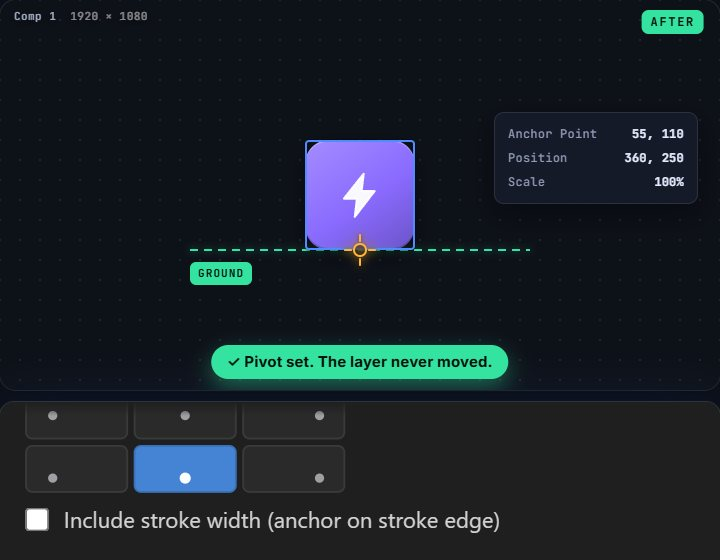
Transform
Group Transform scales the selection as one block around the pivot you pick.
Without it. Precompose, or parent everything to a null, just to scale a cluster.
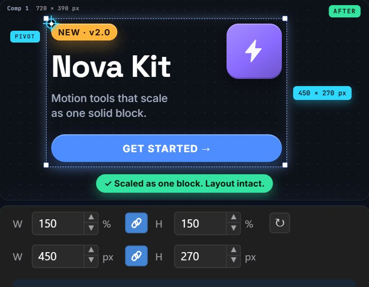
Transform
Apply individually resizes every layer to the same width, each around its own anchor.
Without it. Type a scale percentage into every layer, one by one.
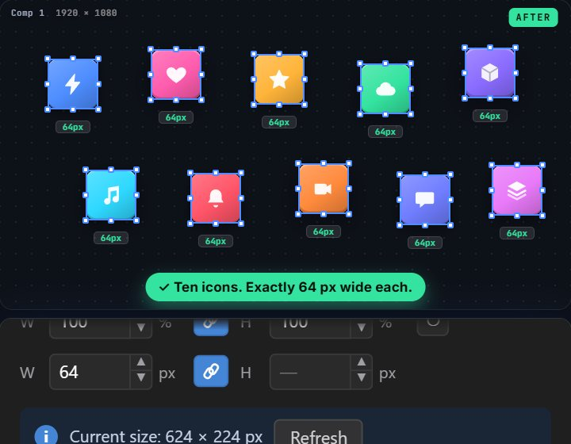
Transform
One height for every logo, aligned centres, exact gaps.
Without it. Resize each logo, align each one, space each one. Twenty times.
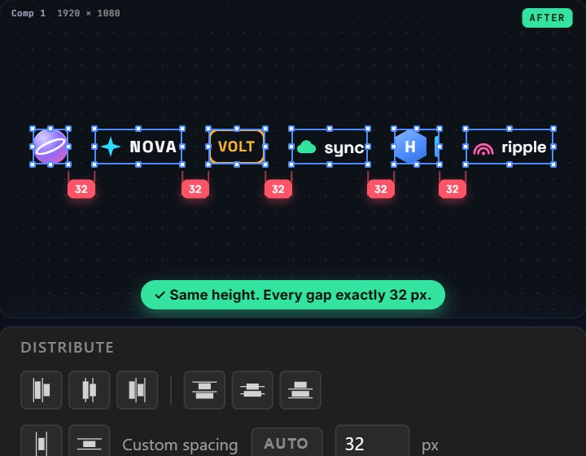
Transform
Change size, not scale: the geometry grows and the stroke stays constant.
Without it. Scale a shape layer and its stroke scales with it.
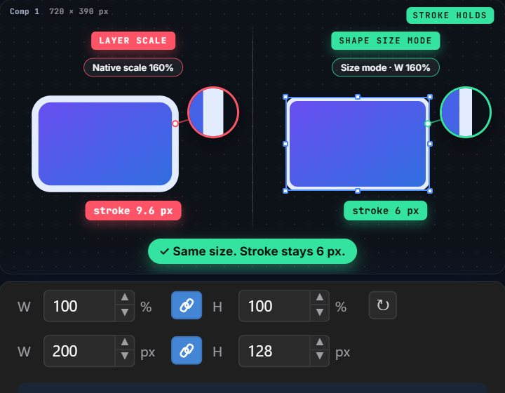
Transform
Resize via font size. The layer stays at 100 %.
Without it. Scaling text leaves the layer sitting at 150 %.
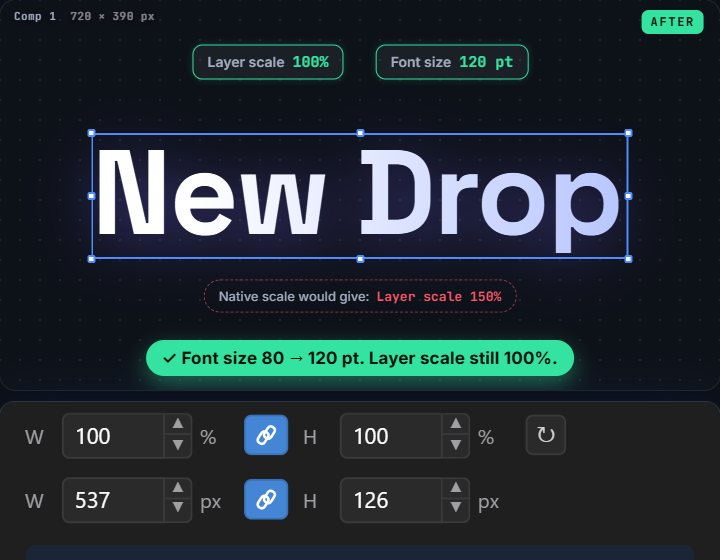
Transform
Group Rotate turns the selection as one rigid block around the pivot you choose.
Without it. Parent everything to a null, then rotate the null.
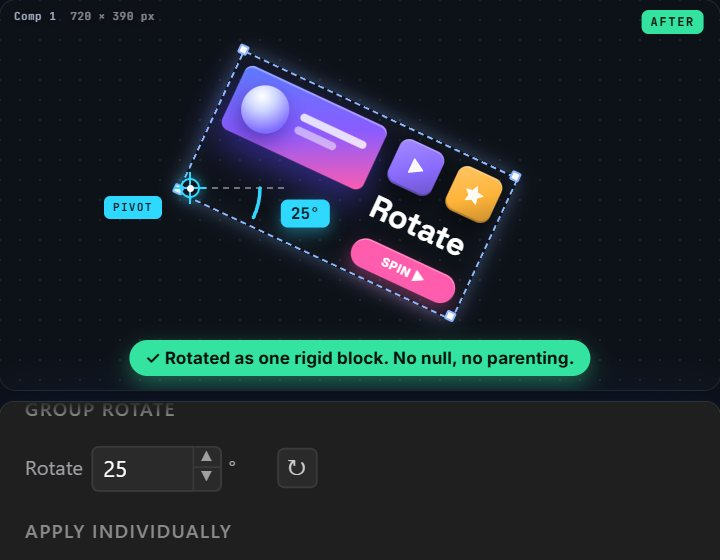
Transform
Apply to all keyframes carries the whole animation with it.
Without it. Scale a layer and its motion path stays behind.
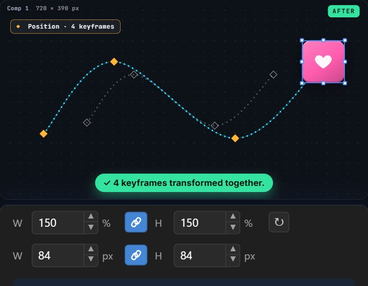
Group transforms, anchors that never jump, and resizes that leave strokes and type alone.
Try it
A simplified model of the real panel, running right here. Click layers to select them (the first one you pick is the key object), choose a reference, then align, distribute or space.
Time saved
Every alignment job costs you a minute or two, and they add up. These are rough defaults, not measurements. Move the sliders to match how you actually work.
0hours back per year
0hours per month
$0of your time per year
—minutes back per project
Illustrative estimate from the numbers on the left. Your results will vary.
No subscription. Free updates. And a 30-day money-back guarantee if it is not for you.
Built for real projects
Animated layers, parented layers, rotated and 3D layers, masks, shapes and text. The details that usually break a helper tool are the ones this one was built around.
Composition, selection, key object, group → key, group → comp, title-safe. The same buttons do six different jobs.
Nearby layers become one unit, so an icon and its label move and space together.
Type a number and get exactly that gap. Or hit AUTO and let it read the gap you already have.
Move the pivot anywhere on the layer. Position is compensated on every keyframe, so nothing jumps.
Scale, resize to pixels or rotate a whole selection around a pivot, without a null and without parenting.
“Make all these icons exactly 100 px wide.” Every layer resizes around its own anchor.
Animated layers stay animated. Align edits the current frame like native AE; anchor and group transform can shift every keyframe.
Aligning a parented child moves the child, never its parent.
Aligns the true rendered bounding box of rotated and 3D layers, camera projection included.
Optionally aligns the visible, masked region instead of the full source.
Resize shape geometry instead of scale so strokes stay constant. Resize type via font size so the layer stays at 100 %.
Every operation is a single named undo step. Settings persist across reloads and restarts.
Side by side
Watch
Prefer YouTube itself? Open the walkthrough there.
Install
Right after purchase, from Gumroad.
The aescripts ZXP Installer or Anastasiy’s Extension Manager. Wait for the green check.
Open Window → Extensions → Ultimate Align and dock it next to your timeline.
Questions
After Effects CC 2019 (16.0) through 2026 (26.x) and beyond, on Windows and macOS.
Download the .zxp file after purchase and drag it onto a free ZXP installer (the aescripts ZXP Installer works, so does Anastasiy’s Extension Manager). Wait for the green check, restart After Effects, then open Window → Extensions → Ultimate Align. The panel docks like any native panel.
No. It is a one-time purchase with free updates, and there is a 30-day money-back guarantee.
No. Align, distribute and spacing edit the current frame, just like the native Align panel. Anchor point and group transform can shift every keyframe so your animation stays intact. Every operation is one named undo step.
Yes. Aligning a parented child moves the child, not its parent. “Respect rotation” (on by default) uses the true rendered bounds of rotated and 3D layers, and “Respect masks” aligns the visible masked region.
No impact on render performance. The panel only runs while it is open.
Yes. The “?” button at the top right of the panel opens a full help with pictures, short videos and worked examples, in English or Hebrew.
Yes. When there is a new version, you install the new .zxp the same way as the first one.
One panel for alignment, spacing, anchors and group transforms in After Effects. One purchase, free updates, and a 30-day money-back guarantee.
After Effects CC 2019 → 2026+ · Windows and macOS · Instant download